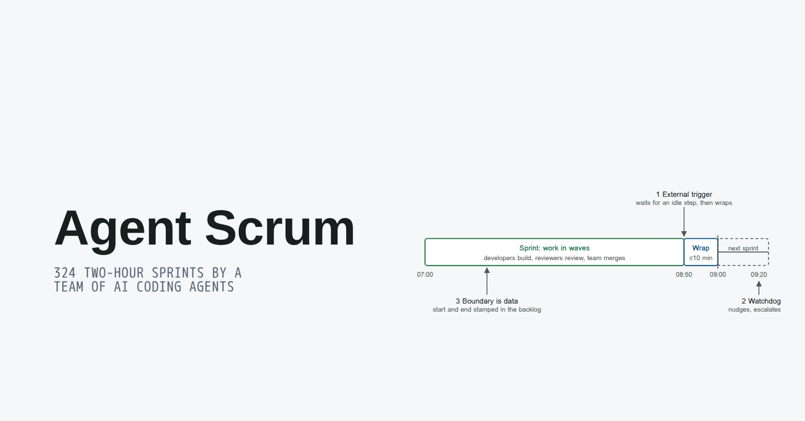
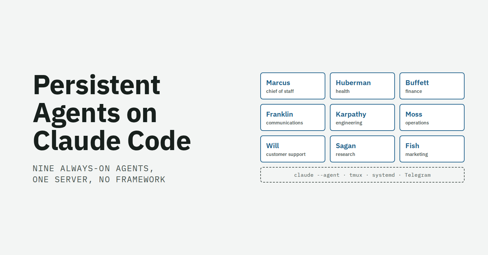

Agent Scrum
A sprint method for teams of AI coding agents, with observations from 324 two-hour sprints: 79% of committed stories done within the sprint, under five minutes of ceremony each.
Inner Stack Labs · Lab
Inner Stack Labs makes software and practices for personal development. The Lab is where we publish what we learn along the way: decks, papers and field notes, with the numbers behind them.

A sprint method for teams of AI coding agents, with observations from 324 two-hour sprints: 79% of committed stories done within the sprint, under five minutes of ceremony each.

How an engineer who already uses Claude Code can run always-on personal agents with Claude Code alone: nine named agents, eight months, one Linux server, no agent framework.
Inner Stack Labs is Dave Remy's company for software and personal development. We build tools such as Neuralingual, which offers spoken coaching for high performers, and we run our own work with a team of persistent AI agents.
Everything here comes from that daily practice. We write up what worked, what we measured, and what we changed.